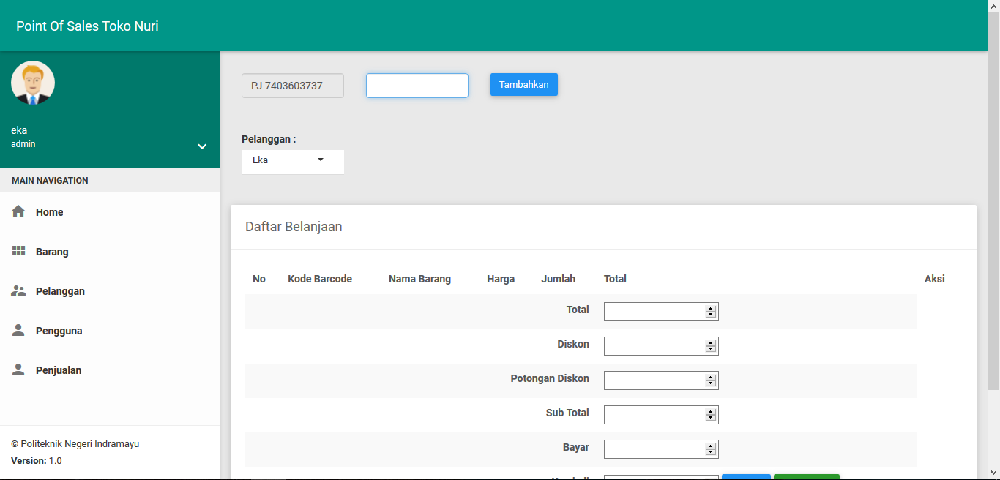
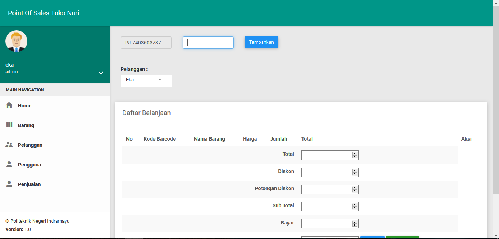

Point of Sales (POS) berbasis Website dan Android

Project Akhir untuk Mata Kuliah Project II.
Project Point of Sales (POS) yang menggunakan 2 pemrograman, yaitu web dan android. Untuk android menggunakan bahasa pemrograman Java, dan untuk web menggunakan bahasa pemrograman PHP. Aplikasi android digunakan oleh user admin untuk menambahkan serta edit barang dengan menggunakan barcode scanner, sedangkan untuk web digunakan oleh user admin juga untuk mengelola serta transaksi penjualan dan laporan.


 
